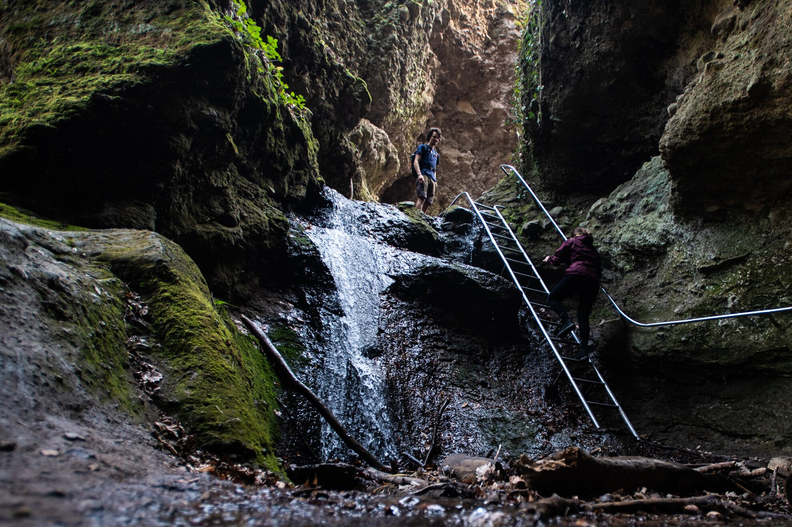
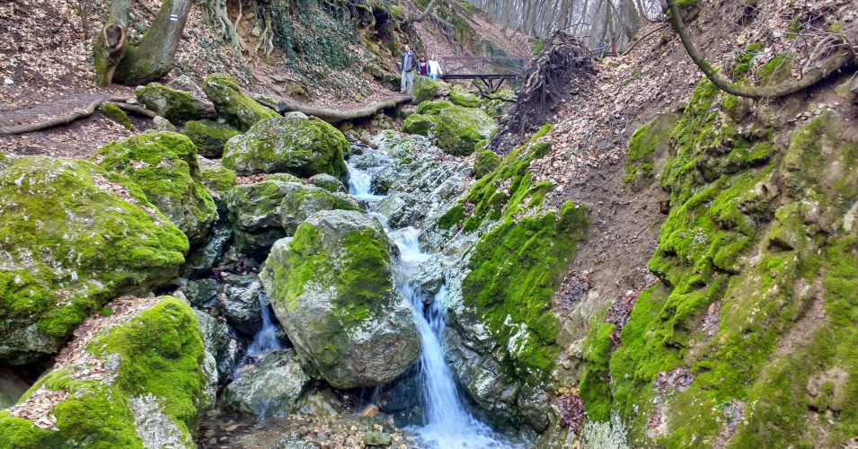

A Pilis-tető a Pilis-hegység legmagasabb csúcsa, 756 méterrel a tengerszint felett.
Korábban
katonai terület volt, így sokáig nem volt látogatható, de ma már szabadon felkereshető. Az egyik
legérdekesebb
pontja a Boldog Özséb-kilátó, amelyet 2014-ben építettek újjá egy régi geodéziai torony
helyén.
A kilátó nevét Boldog Özsébről, a pálos rend alapítójáról kapta, aki a Pilisben remetéskedett.
A kilátóból fantasztikus panoráma tárul elénk, ahonnan tiszta időben akár a Mátra, a Börzsöny vagy még a
Magas-Tátra csúcsai is láthatók. A helyszín népszerű a természetjárók körében, és több túraútvonal is
vezet
ide,
például:
Pálos út, amely a pálos szerzetesrend történelmi emlékeit követi.
Zöld háromszög turistaút, amely a Dobogókőtől indul.
Pilis-keresztje túraút, amely a hegytetőn lévő hatalmas fakereszthez vezet.
Rám-szakadék

A Rám-szakadék Magyarország egyik leglátványosabb és legizgalmasabb szurdoka, amely a
Visegrádi-hegységben található, Dömös közelében. A mintegy 1 kilométer hosszú szurdokvölgyet a
Rám-patak formálta ki az évezredek során, és a kanyargós, sziklás, helyenként 35 méter
magas
szurdokfalak között vezet az út.
Ez egy igazi kalandtúra, hiszen több helyen vaslétrákon és kapaszkodó láncokon kell
felmászni a
sziklafalakra, miközben a patakon is át kell kelni. A szurdok bejárása egyirányú, és csak
alulról
felfelé haladhatunk rajta, ami biztonsági okokból lett így kijelölve.
Túraútvonal ajánlás:
Kezdőpont: Dömösről indulva a Szentfa-kápolna érintésével jutunk a szakadék alsó
bejáratához.
Táv: kb. 6-7 km (oda-vissza).
Nehézség: Közepesen nehéz – néhány szakaszon technikai ügyességre és jó fizikai
állapotra
is szükség van.
Végpont: A szakadékból kiérve folytathatjuk a túrát a Dobogókő
felé,
vagy
visszatérhetünk Dömösre egy másik úton.
A legjobb időszak a Rám-szakadék meglátogatására tavasz és ősz, mivel nyáron a hőség
megterhelő
lehet, télen pedig a jeges sziklák balesetveszélyesek lehetnek.
Dera-szurdok

A Dera-szurdok egy kevésbé ismert, ám csodálatos kirándulóhely
Pilisszentkereszt közelében, a Pilis-hegység egyik legszebb szurdokvölgye. A szurdok
hossza
kb.
1,5 km, és a Dera-patak vájta ki a mészkősziklák közé. Ez egy könnyebben
bejárható szurdok, így gyerekekkel vagy kevésbé tapasztalt túrázókkal is érdemes
ellátogatni
ide.
A szurdokvölgyben kis fahidakon kell átkelni a patak fölött, és meredek
sziklafalak között vezet az út, amely nagyon hangulatos, különösen ősszel, amikor a
falevelek
színes szőnyeget borítanak a földre.
Túraútvonal ajánlás:
Kezdőpont: Pilisszentkeresztről indulva a sárga jelzésű
turistaúton
érhető
el a szurdok.
Táv: kb. 3-4 km oda-vissza.
Nehézség: Könnyű – ideális családok számára is.
További lehetőség: Ha hosszabb túrát szeretnénk, folytathatjuk utunkat a
Pilisszentkereszti ciszterci apátság romjai felé.
A Dera-szurdok különösen csapadékos időszakban lenyűgöző, amikor a patak vize bővebb, de
érdemes
vízálló cipő